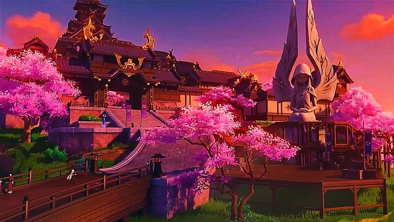

A lo largo de Teyvat se encuentran las 7 regiones regidas por sus diferentes elementos y arcontes(Dios representativo de la nación), el arconte no es estrictamente el goberanante de la región pero sí una figura importante, a lo largo del continente existen las 7 regiones cada una con una estética y paisajes muy diferentes los unos a los otros.
La primera región que explore sus diferentes paisajes fue Fontine de donde soy proveninente, en está se pueden encontrar paisajes, está región es caracterizada por su amplio mar que divide la región en diferentes Islas, con construcciones más avanzadas que las del resto del continente y una ambientacion muy marcada hacia lo Steampunk, de cualquier modo la parte natural no se queda atrás con sus amplios bosques.
Está región contiene la ciudad más grande del contiente con diferentes lugares para pasar el rato como restaurantes, cafes. Hasta su principal construcción, la corte de Fontine.
Sumeru
Sumeru es una región divida en dos, el desierto y la selva. En el desierto habitan los restos de la civilizacion del rey deshret y son aparatos por la civilizacion en la jungla. Está región es conocida por ser la nación de la sabiduria donde su diosa su principal elemento es el dendro(la planta).
El principal atractivo del desierto son su gran cantidad de piramides y antiguadades del rey. Donde la principal piramide es una de las estructuras más altas del continente, donde además cuenta con tecnologia antigua protegiendo las mismas.
Por otro lado la jungla contiene bastantes estructuras con diferente arquitectura a la del desierto, en está se encuentran palacios, la gran ciudad donde su principal atractivo es el enorme arbol en donde se sostiene la "Academia" de los estudiosos de esta ciudad, además sus zonas naturales son consideradas de las más bonitas en el continente.
Inazuma
Decidí que mi siguiente parada sería Inazuma ya que recintemente ha abierto sus fronteras y ahora es accesible, está dividido en 3 islas principales, donde la primera isla cuenta con una de las vistas más hermosas que haya visto, contiene el gran árbol de sakura donde se encuentra el templo narukami regido por Yae Miko. En está región se encuentran muchso árboles morados y rosas los cuales nunca había visto y son demsiado bonitos.
 El lugar más bonito que haya visitado alguna vez.La principal ciudad de Inazuma no se queda atrás, ya que tiene una arquitectura muy unica en el mundo con casas de madera y una estetica muy diferente a mi ciudad de origen, además se encuentra el palacio de la gobernante, la arconete conocida como Shogun Raiden, está ciudad cuenta con una casa secundaria al palacio la cual tiene como misión proteger la region.
Por el momento hasta aquí mi blog, cuando siga viajando lo iré actualizando.